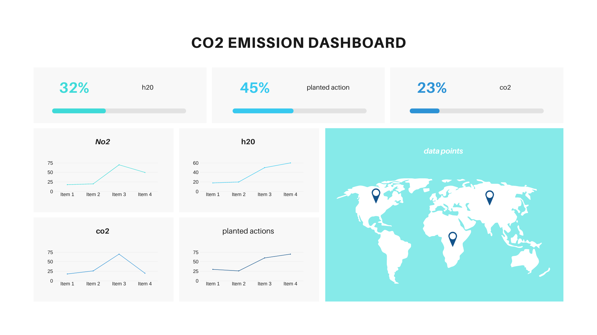

Decentralized Measurement, Reporting and Verification of Regenerative Actions
Empowering the world with decentralized regeneration action standards.


Empowering the world with decentralized regeneration action standards.
Decentralized measurement, reporting and verification (dMRV) means that no single entity will own, manage or regulate how MRV is done

Data is collected with on ground data points, the use of IOTs,and satellite sensing.
Open source Verification and Reporting methodologies are used to analyse the data.
Entities that collect the data and create the analysis methodologies are paid each time data is used and an analysis done.
Ogallala Life IRL Pilot Projects located in Central and Southern High Plains, initially near Amarillo TX.Jon Ray Creek / upper camp pasture, a few hundred acres with stretch of (ex)intermittent watershed suitable for leaky weirs and/or subsurface and sand dams. Livestock to be excluded for few year initial establishment, install check dam cascade and revegetate riparian, then reintroduce rotational grazing along shoulders. Learn More
These have committed on driving this decentralization vision to the next level.
.png)
.png)


These are some of the questions that people are asking us in our meetings.